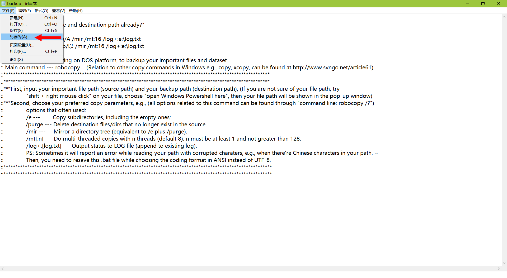
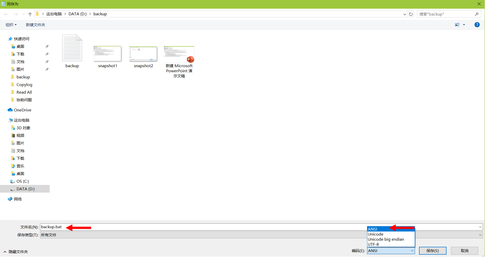
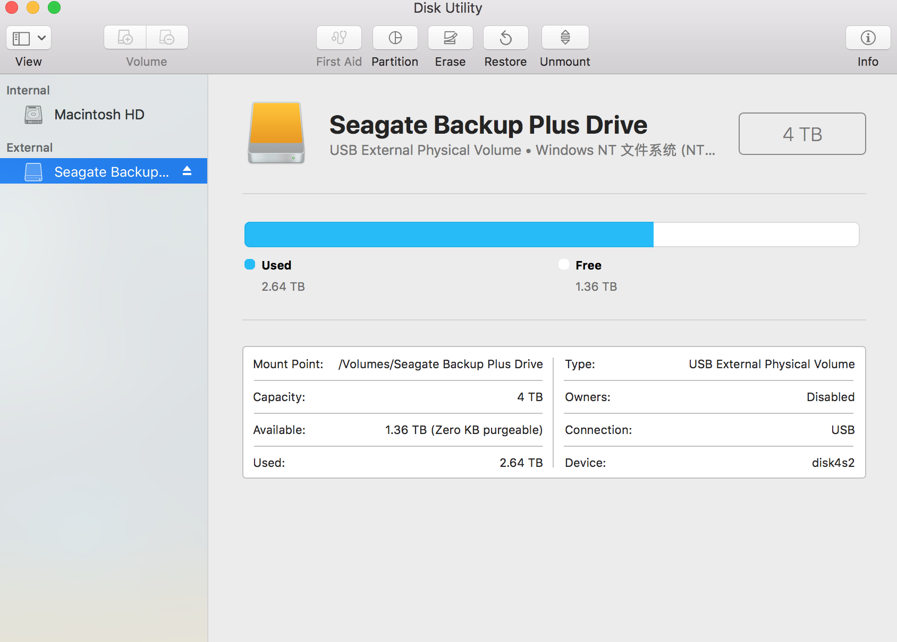
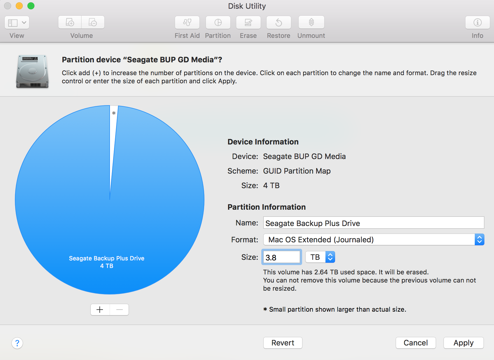
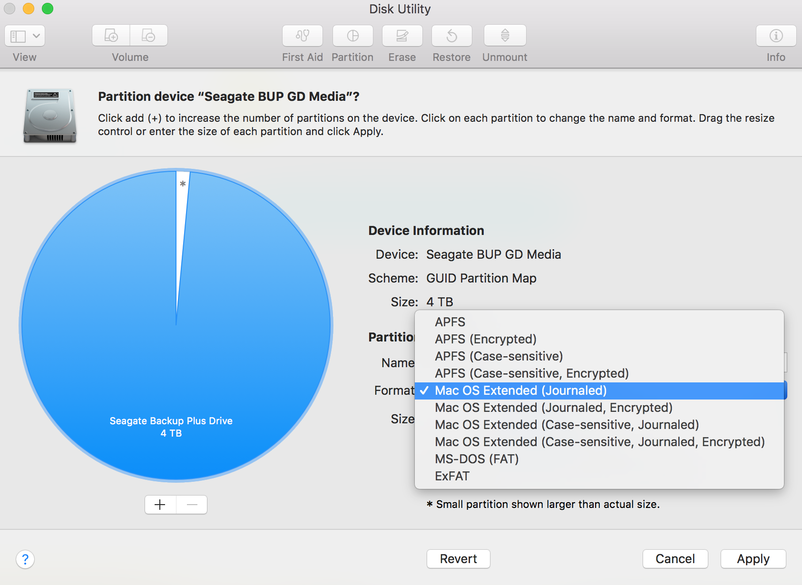

文件备份
文章目录
在写程序或者处理大量数据时，不进行必要的备份是十分危险的。一旦电脑硬盘出问题，几个月的辛苦就付诸东流。要备份程序和数据，首先就需要有一块备份硬盘，然而不同操作系统（Linux、Windowns和Mac）使用的文件系统 (filesystem) 不尽相同，导致不同文件系统的硬盘往往不能跨平台读取和存储。
- Linux的
ext4文件系统在Windows和Mac下不可读。 - Windows的
NTFS文件系统在Mac下只读不能写，exFAT文件系统虽在Mac下可读可写，但文件权限会出错；NTFS和exFAT在Linux下虽可读可写，但是文件权限会出错。 - Mac的
HFS+文件系统在Linux和Windows下不可读。
首先介绍各操作系统的主要文件系统，然后介绍如何在Linux，Windows和Mac下进行硬盘备份，最后简要介绍网盘备份。
文件系统
Linux文件系统
Linux有几十个文件系统类型，可以利用以下命令查看全部文件系统的介绍：
|
|
Linux主要文件系统:
ext2: Linux second extended file system (ext2fs)，Linux最传统的磁盘文件系统。ext3: 增加日志功能，可回溯追踪。ext4:RHEL6、CentOS 6.x、Ubuntu等大部分Linux发行版本的默认文件系统。xfs:RHEL7、CentOS 7.x等Linux发行版本的默认文件系统。
Windows文件系统
Windows主要文件系统:
FAT：也称FAT16，MS-DOS和最早期的WIN95操作系统中最常见的硬盘分区格式，能支持最大为2GB的硬盘分区，目前基本上已经不再使用了。FAT32：Win98开始，FAT32得到了广泛的应用，可以支持大到2TB的分区，但是单个文件最大只能支持4GB。NTFS: 从Windows XP系统开始逐渐成为主流的磁盘格式，目前仍是主流的磁盘格式。针对传统机械硬盘而设计的，对于新兴的Flash闪存材料不一定适用。1993年微软推出了全新的操作系统Windows New Technology (Windows NT)，后来的Windows 2000、XP、Windows 7、Windows 8、Windows 10都属于WindowsNT家族，这个家族的文件系统就叫New Technology Filesystem （NTFS）。exFAT: 也被称为FAT64，近年出现的格式，主要针对移动存储设备，如闪存、U盘等。因为FAT32单个文件不能超过4GB，使用NTFS又容易损坏闪存芯片，所以开发exFAT格式来解决这些问题。
Windows系统的文件格式具有一定的跨平台性
FAT32，NTFS和exFAT在Linux下可读、可写，但文件权限会出错。FAT32和exFAT在Mac上的可读、可写，但文件权限会出错，而NTFS文件系统在Mac下只读不能写。
Mac文件系统
Mac主要文件系统:
UFS: 全称Unix File System，也称Berkeley Fast File System。Mac OS X Lion版本后才取消对UFS的支持。HFS+: 也称Mac OS Extended或HFS plus。苹果收购NeXT后，UFS在MacOS中作为默认文件系统的时间并不长。1998年1月，苹果收购NeXT一年后，发布了Mac OS 8.1，并搭载HFS Plus (HFS+)文件系统，用于取代UFS。可以用Time Machine进行有效的备份。APFS: 2017年，伴随着Mac OS High Sierra，苹果正式发布了Apple File System。为了和AFS (Apple File Service)区分，采用了APFS作为缩写，目前与Time Machine还不兼容。
为了与Windows相兼容，Mac还有MS-DOS (FAT)、Windows NT Filesystem和ExFAT等文件系统。
硬盘备份
我买了几块4T的Seagate Backup Plus移动硬盘，大约800元/块，默认文件格式是NTFS或exFAT，可以根据自己的实际需求对硬盘进行格式化。
我个人的硬盘主要用于：
- 存储数据
- 为了能在Windows，Mac和Linux跨平台使用，可以选择
exFAT。其在三个系统里均可读可写，只是在Linux和Mac中文件权限会出错，但是数据文件的权限出错对日常科研并没有影响。 - 如果只想在Windows和Linux之间使用，也可以采用
NTFS，其在这两个系统里也是可读可写，但文件权限会出错。
- 为了能在Windows，Mac和Linux跨平台使用，可以选择
- 增量备份脚本、文件
- 对于不同的操作系统，需要选择不同的文件系统进行格式化，保证文件的权限不变。
- 根据自身需求，每隔一段时间(每周或者每个月)进行备份，在出差前最好也对电脑做个备份。
以下的讨论都是基于第二个目的，第一个目的只需格式化操作即可。文件管理可以参考SeisMan’s blog。
Linux
目前我使用CentOS 7，文件系统为xfs。为了与大部分Linux版本兼容，我采用更普遍的ext4作为移动硬盘的文件系统。
在Linux上插入移动硬盘，查看移动硬盘挂在的目录：
|
|
可以看到移动硬盘挂载在/dev/sdc2，千万不要搞错挂载目录。
|
|
最后利用rsync命令对重要的文件、脚本、数据等进行备份了。第一次备份会比较慢，但是第二次由于只更新电脑中改动过的文件，会比较快。可以写一个备份脚本，这里有一个perl脚本backup.pl可以参考。
Windows
Windows下进行备份，移动硬盘的文件系统格式可以是NTFS或exFAT。备份跟Linux很类似，使用DOS的robocopy命令进行同步。这里有一个backup.txt文件可以参考，将后缀txt给成bat，就变成了bat脚本，双击bat脚本就直接运行了。需要查看txt原文件，将参数按照自己的实际情况进行修改。
如果备份脚本里有中文，则文件需要另存为成ANSI编码格式，而不是UTF-8格式：


Mac
我使用Mac强大的Time Machine进行备份，Time Machine可以回到之前任意时间点备份的文件状态。
首先将移动硬盘格格式化成HFS+。如果有人为了能够与Windows和Linux兼容，可以只将部分空间格式化成HFS+，保留部分NTFS或者exFAT空间，不过有几点注意事项：
- Mac自身的
Disk Utility不能将硬盘格式化为NTFS，只能格式化成MS-DOS(FAT)和exFAT。如果移动硬盘原始格式不是NTFS，而我们想使用NTFS，可以用Windows或者Linux下的工具先将其格式化成NTFS。 NTFS文件在Mac上只读，MS-DOS(FAT)和exFAT在Mac上可读、可写，但是文件权限会出错；MS-DOS(FAT)单个文件不能大于4GB；exFAT作为FAT32的升级版，据说目前还不太稳定，如果文件系统不够稳定，就存在着分区表丢失、数据丢失等隐患，建议谨慎使用，但是目前exFAT又确实是跨三个平台的最好的文件格式。
插上移动硬盘，然后打开Mac的Disk Utility:

将3.8T的空间格式化 (Partition) 成Mac OS Extended (Journaled)格式：


修改分区Name，选择一个自己喜欢名字。同时也可以增加其他格式的分区。
接下来就可以利用Time Machine进行增量备份了，第一次会比较久，后面每次更新新文件：
- 系统偏好设置 -> Time Machine -> 选择备份磁盘 -> 选择分好的磁盘专区，将当期Mac电脑文件备份到移动硬盘中
网盘备份
现在有很多网盘服务，可以用来在不同设备之间进行同步，也可以用来备份。目前可以在Linux下使用客户端的同步网盘有坚果云，Dropbox, MEGA和百度网盘等。其他还有OneDrive，Google Drive，七牛云存储等网盘。
坚果云：国内目前最好的全平台同步网盘，不限空间，但限制每月上传流量1G，下载流量3G；有需要的可以考虑购买高级版。Dropbox： 国外最好用的全平台同步网盘，但被墙了，熟练掌握科学上网技巧的人可以使用， 一般人还是不要用了；免费用户只有 2GB 容量，最大可扩容到 18GB 以上；付费用户容量为 1T，对于国内用户稍稍有些贵。MEGA：免费容量50G，作为同步盘来说基本是够用了。百度网盘：可以有2T的免费空间。OneDrive: 微软的云服务，新版的 Word、Excel、PowerPoint 以及 Onenote 等等都可以直接保存到 OneDrive 中；初始免费容量 5G；NTU 员工有1T的空间，用来备份和同步日常文件足够了。Google Drive： 免费容量15G。Google Photos: 用于同步手机照片。
我个人的使用情况：
- 使用
坚果云在Mac和Linux之间同步文件 - 使用
OneDrive和Google Drive对Mac进行网盘备份 - 使用
Dropbox，OneDrive和Google Drive进行文件共享 - 使用
Google Photos同步手机照片 - 一些视频、照片、软件、书籍等文件放在
百度网盘里进行备份
驱动程序
如果只用一块移动硬盘，但是想在Windows和Mac系统下使用，也可以直接花钱解决: https://www.paragon-software.com。这也是Mac的官方推荐。
参考
- Linux文件系统：鸟哥的Linux私房菜：基础学习篇 第四版、深入理解ext4等Linux文件系统、Linux文件系统类型简介及支持的文件系统汇总–Linux入门到精通系列、daduryi博客
- Windows文件系统：Hansel博客、关于硬盘/U盘/储存卡格式
- Mac文件系统：磁盘工具使用手册、谈谈Mac OS的文件系统、How-To Geek
- Mac磁盘管理：星际穿越者博客、磁盘工具使用手册（在Mac上使用“磁盘工具”将物理磁盘分区、如何抹掉Mac磁盘、在Mac上使用“磁盘工具”来格式化磁盘以用于Windows）
- 网盘基础：SeisMan’s blog:一些产品的推广链接、SeisMan’s blog:CentOS 7 配置指南 — 日常软件篇、SeisMan’s blog:我所使用的软件/服务列表
编辑历史
- 2020-09-17: 增加Linux 百度网盘
- 2020-03-02: 增加exFAT格式
- 2019-07-06: 初稿
文章作者 core-man
上次更新 2020-03-15